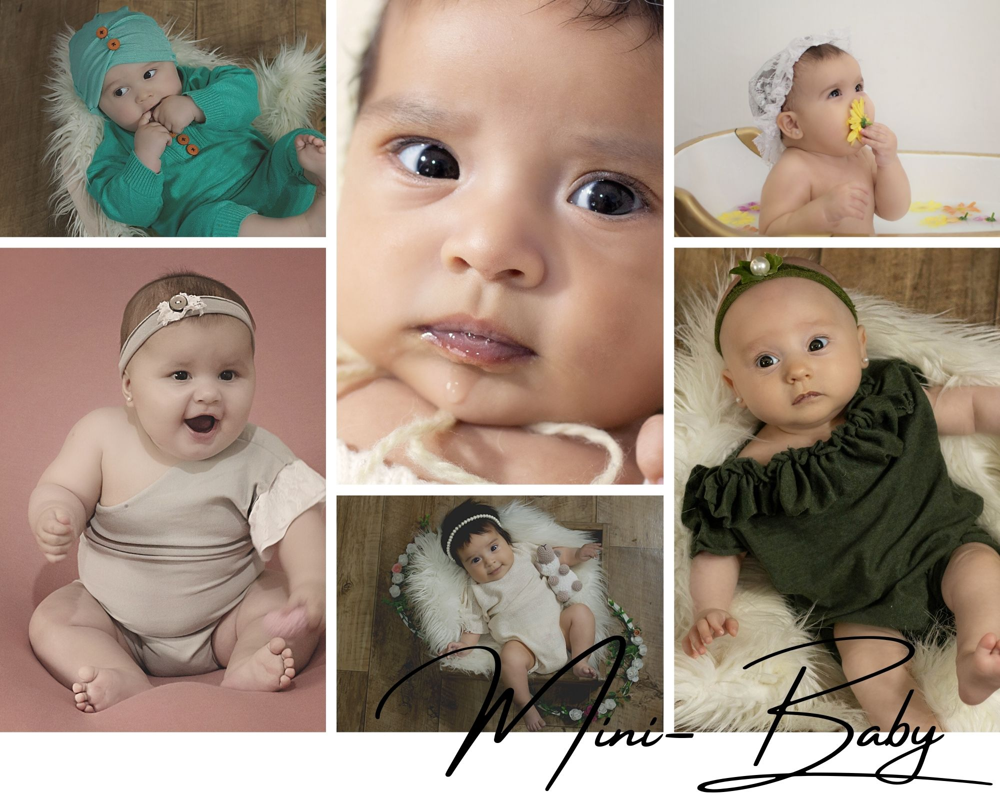

Mini Baby
Nuestro estudio ubicado en la zona sur de Rosario, a pocas cuadras del Boulevar 27 de febrero, cuenta con climatización todo el año para brindarte la mejor experiencia en tu visita. Todo tipo de vestuarios disponibles y accesorios(consultar edad), también encontraras muestras físicas de los productos que incluyen las entregas finales como cuadros, fotolibros, gigantografias, entre otros.